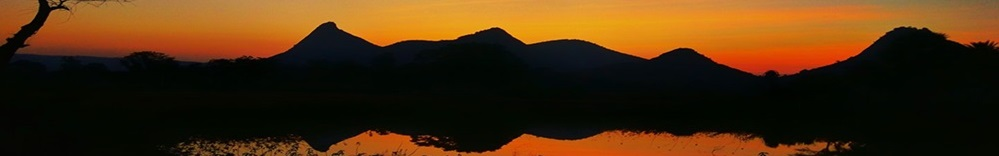

Posted by Bhaskar Biswas on Friday 27 September 2024
Get a taste of Rock Climbing before committing yourself to a full climbing course! Perfect for those who have never climbed, you will learn about safety on the rock, using climbing equipment, abseiling, using various footholds & handholds, proper belay technique and much more. For those who have completed the Basic Rock Climbing Course or have previous certified experience in rock climbing, they can directly join the Intermediate Level.
Age: 15+
For young kids, this adrenaline-pumping program provides a mix of exciting experiences involving indoor and outdoor activities. Plus there’s a daily talk from gifted speakers who reach out to the hearts of young people to connect with them in their world about life, values, achievement, and hope. Our hope to see young people in our communities journey into adulthood with a deep sense of value and purpose, and a commitment to our environment.
Age: 7-14
If you are interested then contact this number.....
Posted by Arnab Das on Thursday 24 October 2024
The traditional Trekking and Survival Skills are so important, so easily learned and yet so often neglected by modern outdoor adventurers! The course covers a wide spectrum of walking experiences in natural or green areas. The knowledge and experience you need to travel, live comfortably and survive in the wilderness or mountains can be readily gained by participating in this short course.
Age: 40+